SLAM (Simultaneous Localization and Mapping) is a core technology in autonomous systems that enables them to estimate their own position and build a map of unknown environments simultaneously. SLAM systems in dynamic environments are of great practical importance. However, existing dynamic SLAM approaches still have several limitations like over-removal and high computational costs. To address these limitations, we propose a real-time RGB Dynamic SLAM framework that precisely removes moving objects at the pixel level without relying on predefined labels or segmentation models. Our system combines pixel motion predicted by ego-motion using DUSt3R with point tracking from All-Tracker, removing only actually moving pixels by analyzing discrepancies between the two motion sources. Unlike object-level masking methods, our approach eliminates only currently moving regions, allowing temporarily static parts to be utilized for tracking. Operating at approximately 10 FPS, the system achieves real-time performance on standard 30 FPS video streams by subsampling every 3 frames. Relying solely on RGB inputs, this significantly improves upon state-of-the-art dense dynamic SLAM approaches (0.5–3 FPS), presenting a highly practical solution.
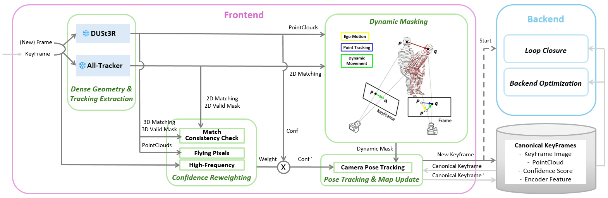
Our proposed framework is a real-time monocular dense SLAM system designed for robust tracking and mapping in dynamic environments. We build upon MASt3R-SLAM as our baseline, but introduce a fundamental shift in how geometric correspondences are constructed and dynamic outliers are handled. We adopt DUSt3R as our core geometric backbone in place of MASt3R, benefiting from its faster inference and lower memory footprint. To compensate for the absence of MASt3R's learned matching features, we integrate a lightweight pairwise adaptation of All-Tracker, which supplies dense image-level point tracking as a complementary correspondence source. Crucially, this combination serves a dual purpose: beyond providing high-fidelity correspondences, it enables purely geometry-driven dynamic masking without the need for any segmentation or detection models.
|
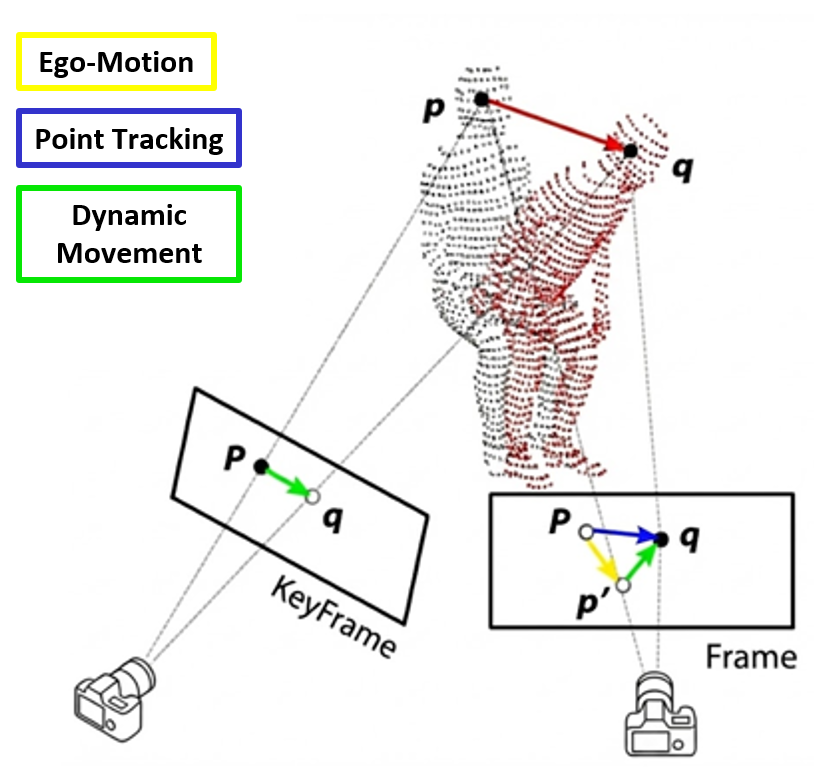 |
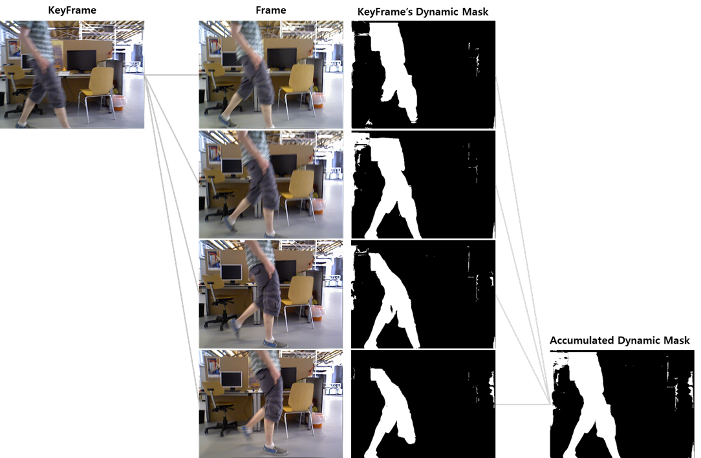 |
Assuming the KeyFrame point cloud reconstructed by DUSt3R is static, projecting those 3D points into the Frame camera produces the pixel motion predicted by camera Ego-Motion. In contrast, All-Tracker predicts pixel correspondences directly between the KeyFrame and the Frame in the image domain, producing Point Tracking. When the KeyFrame point cloud contains dynamic objects, discrepancies arise between these two motions. Points with large discrepancies between the two motions are regarded as Dynamic Movement.
To handle dynamic objects robustly over time, we employ a frame-by-frame mask accumulation strategy, as illustrated in the right figure.
|
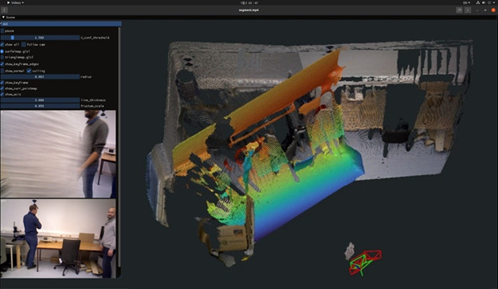 Tracking Failure with Object-Level Masking. Severe feature starvation triggers multiple relocalizations and tracking instability. |
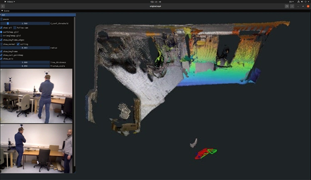 Stable Tracking with Pixel-Wise Motion Masking (Ours). Under the same dynamic conditions, our method selectively masks only moving parts while preserving static regions. The system maintains continuous tracking without any relocalization. This confirms that utilizing temporarily static features on dynamic objects is helpful for robustness. |
|
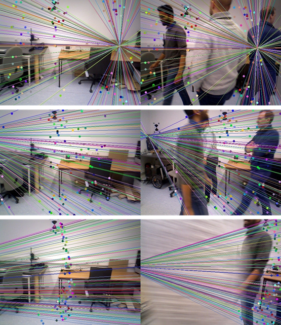 |
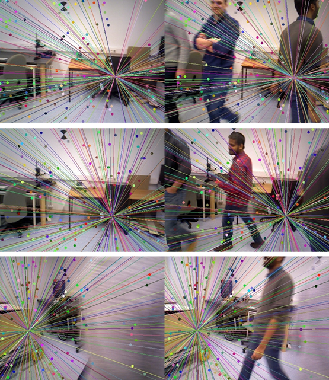 |
Geometric Verification under Dynamic Occlusion. (Left: Keyframe, Right: Current Frame).
Visualization of valid matches (dots) and epipolar lines. Despite large dynamic obstructions, the system maintains accurate epipolar constraints and secures a sufficient number of reliable matches, confirming stable pose estimation.
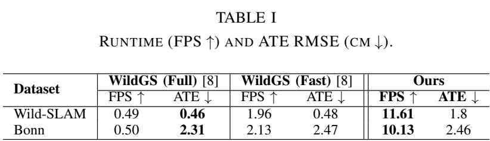
Table I presents the comparison of Runtime (FPS) and Absolute Trajectory Error (ATE RMSE) on the Wild-SLAM and Bonn datasets. Our method achieves ∼11.61 FPS on Wild-SLAM and ∼10.13 FPS on Bonn with peak GPU memory usages of 7.65 GB and 9.46 GB, respectively. This is significantly faster than the SOTA method, WildGS-SLAM, which operates at roughly 0.5 FPS (Full) to 2 FPS (Fast). Despite this high speed, our tracking accuracy is comparable to WildGS-SLAM.
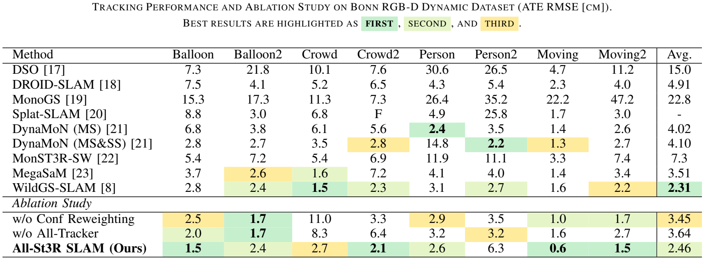
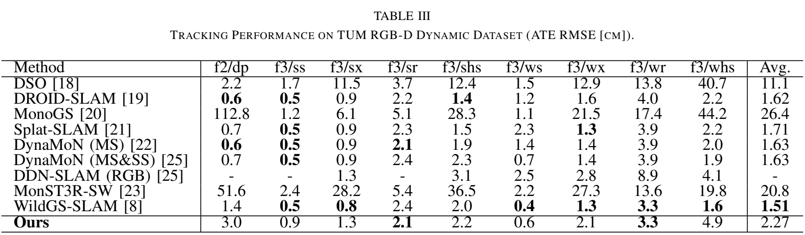
Table II presents the quantitative evaluation on the Bonn Dynamic sequences. Our method attains an Average ATE of 2.46 cm, achieving the second-best overall performance, closely approaching the SOTA WildGS-SLAM (2.31 cm). Table III presents the evaluation on the TUM RGB-D Dynamic sequences. While some recent learning-based methods such as MonoGS (26.4 cm) and MonST3R-SW (20.8 cm) suffer from catastrophic failures or large drift in these highly dynamic scenarios, our method maintains a stable and competitive performance with an average ATE of 2.27 cm, operating at ∼10.18 FPS with a peak GPU memory of 9.74 GB.
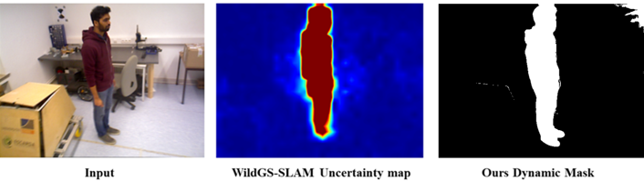
Mask Quality Comparison.
Left: Uncertainty map from WildGS-SLAM, which is blurry due to feature downsampling.
Right: Our pixel-wise dynamic mask on the Bonn dataset, showing high-resolution sharpness and better boundary adherence.
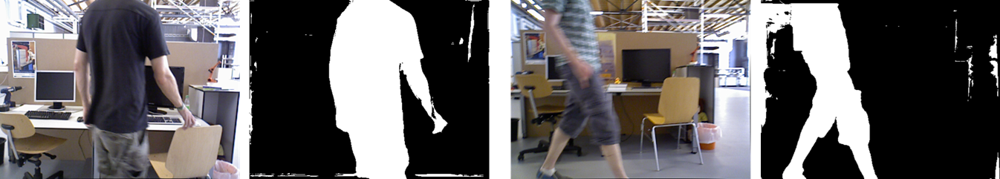
KeyFrame Dynamic Masks.
Visualization of dynamic masks on keyframes from the freiburg3 walking xyz sequence. The system effectively identifies the moving person.
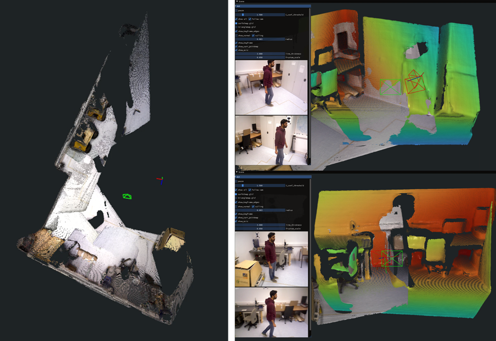
Reconstruction on Bonn Dataset.
Left: Final reconstruction of person tracking. The moving person is completely removed, resulting in clean geometry.
Right: Live tracking visualization showing the current frame (rainbow point cloud) aligned to the canonical map, with the dynamic person effectively masked out.
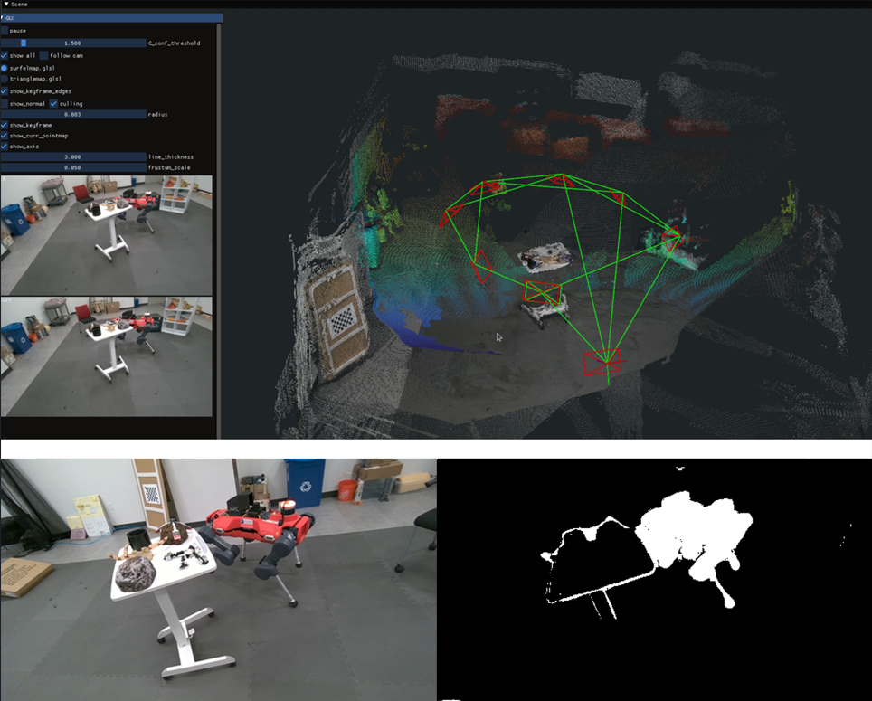
Top: Clean reconstruction, Bottom: Dynamic mask
Our method successfully detects and removes the Quadruped Robot without prior knowledge of the object class.
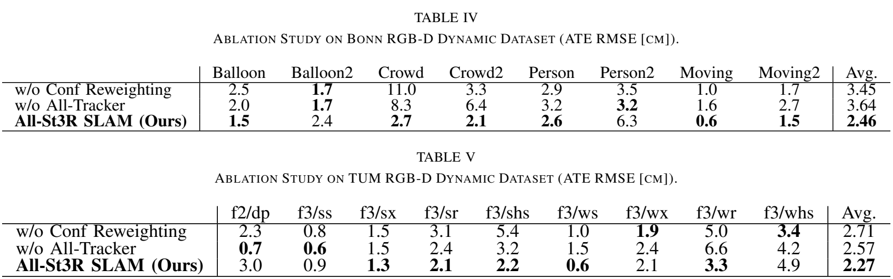
We conduct an ablation study on the Bonn and TUM RGB-D datasets to evaluate the individual contributions of our core components. We compare our full pipeline (All-St3R SLAM) against two configurations: w/o Conf Reweighting and w/o All-Tracker.
@inproceedings{TODO: YourPaperCitation,
title={TODO: Paper Title},
author={[TODO: Author Names]},
booktitle={[TODO: Conference Name]},
year={TODO: 2024},
pages={[pages]}
}
This work was supported by Institute of Information & communications Technology Planning & Evaluation (IITP) grant funded by the Korea government(MSIT)(No.RS-2026- 25516746, Development of On-Device VLA-Based Real- Time Action Intelligence Technology for Task Execution of Autonomous Agents) and the Korea Institute of Science and Technology (KIST) Institutional Program (Project No. 26E0061).